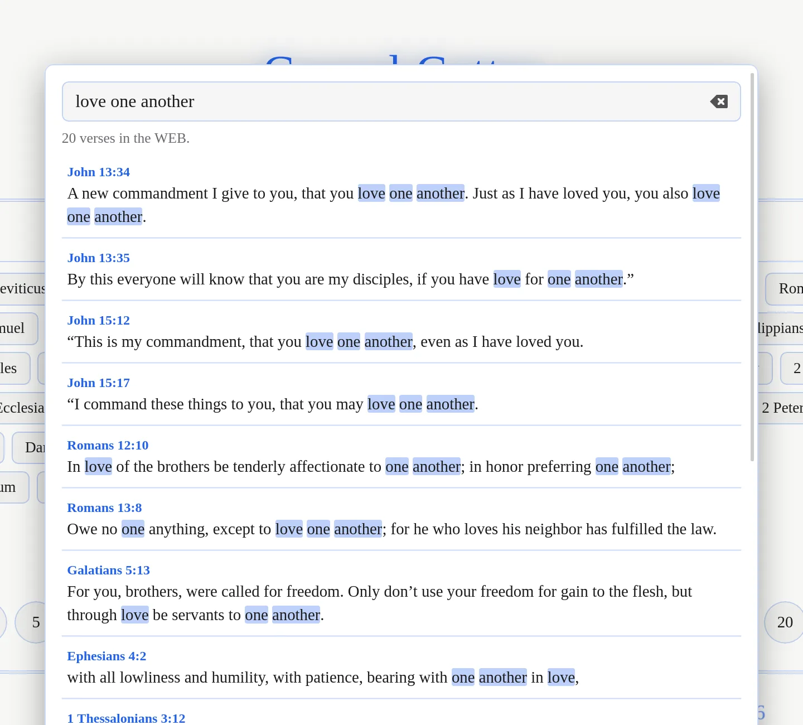
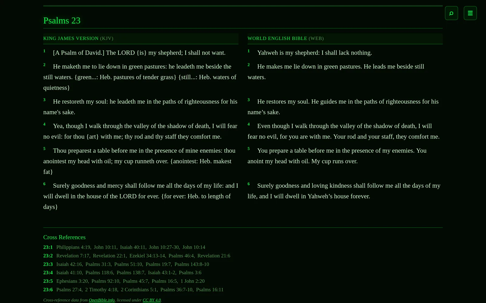
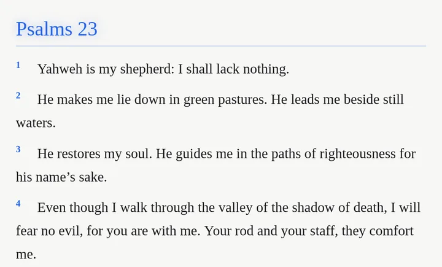
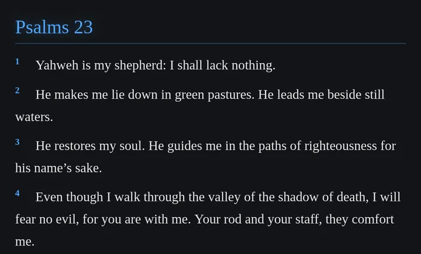
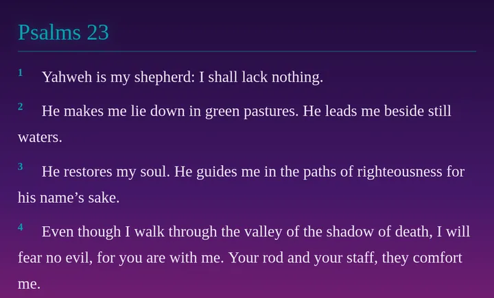
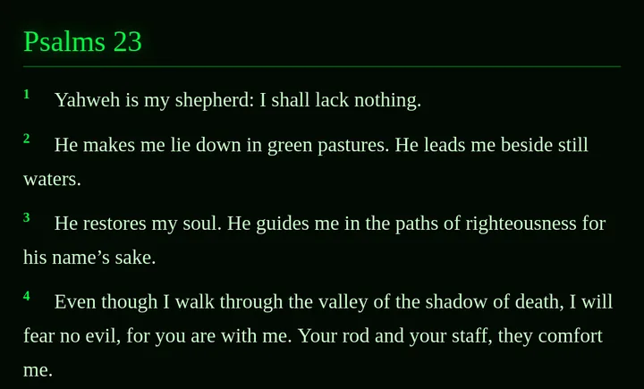
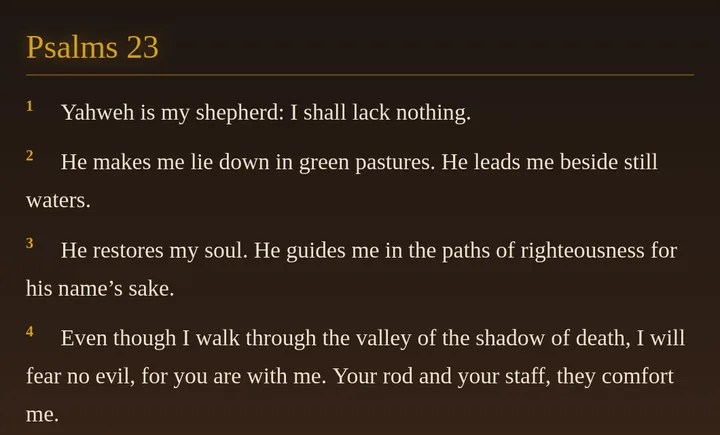
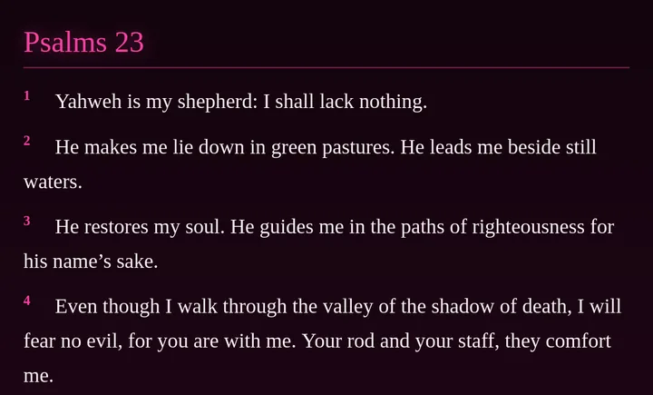

Gospel Getter · Free Bible reader for Windows & Linux
Read Scripture without the noise.
Read the KJV or WEB on your computer, even offline. Find a passage, compare translations, and come back to what matters—no account needed.
Version 2.5.0, for 64-bit Windows and Linux computers. The Windows installer isn’t code-signed yet, so Windows will probably warn you before it runs. What to expect.
Gospel Getter is a desktop app for Windows and Linux computers. There’s no phone, tablet or Mac version. To install it, open this page on your computer.
- Free — no price, no ads, no subscription
- Reads offline — both translations are built in
- No account — nothing to sign up for
- Open source — MIT-licensed code on GitHub

A quiet place to read
Gospel Getter does a few things and stays out of the way. Every screenshot on this page is the real app.
Read in context
The chapter you’re reading sits in the middle, with the chapters before and after it faded on either side, as in the picture above. Press ← and → to turn chapters across the whole Bible, from Genesis 50 straight into Exodus 1. Or pick a book and chapter, or try a random chapter.
Click a verse to see related passages, and click one of them to read it in place. The cross-references come from OpenBible.info.
Find a passage quickly
Press / or Ctrl+K and type a reference such as John 3:16, 1 Cor 13 or Psalm 23 to go straight there.
Type anything else to search the words of the text. You get every verse that contains all your words, in Bible order, with the words highlighted. Search works offline too.

Keep what matters
- Copy with the reference. Click a verse, Shift-click another to select a range, then Copy. You get the text followed by its reference, such as “— 1 Corinthians 13:4–7 (WEB)”.
- Bookmark passages. Bookmarked verses get a star, and your bookmarks list opens any of them again.
- Highlight verses. Highlight the verses you’ve selected in yellow, green, blue or pink, like a highlighter pen. They show in whichever translation you’re reading.
- Back up or move your bookmarks. Export your bookmarks, highlights, reading position and display settings to a file, and import them on another computer. You see what a file contains before anything changes. Bible text isn’t included.
- Pick up where you left off. Your chapter, translation and settings are remembered.

Compare KJV and WEB
Press C to read the King James Version and the World English Bible side by side, one row per verse. Where only one translation numbers a verse, the other column says so instead of shifting anything.
Both texts are stored exactly as their public-domain sources provide them. In the KJV that includes the source’s own bracketed notes, such as {is}.

Made for your computer
Gospel Getter is a desktop app, not a website. Once it’s installed, you don’t need the internet to read.
- Windows and Linux. Installers for 64-bit Windows, and an AppImage or
.debfor Linux. - Works offline. The King James Version and the World English Bible are built in, along with the cross-references and search.
- No account. There’s nothing to sign up for or log in to.
- Your reading stays on your computer. Bookmarks, reading position and settings are kept on your computer, in the app’s own data folder.
- A native app. No browser to open and no background server.
- Free and open source. The code is on GitHub under the MIT license.
Make it yours
Choose from six themes, four text sizes and three line spacings, or switch on reading mode to hide everything but the text. Printing is always black on white.
-

Classic Light -

Classic Dark -

Vaporwave -

Matrix -

Beast Slayer -

Hot Pink
Download Gospel Getter
Version 2.5.0. Free, for 64-bit Windows and Linux. What’s new
You seem to be on a phone or tablet. Gospel Getter runs on Windows and Linux computers only, so open this page on your computer to install it.
Windows
Before you download: the Windows installers aren’t code-signed yet. Windows SmartScreen will probably say it “protected your PC” from an “unknown publisher”. If you trust this download, choose More info, then Run anyway. More about this.
-
Windows installer (.exe)
Recommended for most people.
-
Windows MSI package
For people who prefer or manage MSI installs.
Linux
Choose one:
-
AppImage
Works on most distributions. Nothing to install: make it executable and run it.
-
.deb package
For Debian, Ubuntu and distributions based on them.
There’s no Mac, phone or tablet version, and no web version to read in a browser.
Installing: common questions
Why does Windows warn about an “unknown publisher”?
Windows shows that warning for programs that aren’t code-signed, and Gospel Getter’s installers aren’t signed yet. The warning is about that missing signature; it doesn’t mean Windows found a problem in the file.
If you downloaded the installer from this page or from the GitHub releases page, choose More info, then Run anyway. If you’d like to check the file first, compare its checksum (next question). If you’d rather not run unsigned software, that’s a reasonable choice, and you can wait for a signed release.
How do I check my download?
Each release lists the SHA-256 checksum of every file in SHA256SUMS. The installers are built by GitHub Actions from the tagged source, as the release notes explain.
On Linux, put SHA256SUMS in the same folder as your download and run:
sha256sum -c --ignore-missing SHA256SUMSOn Windows, in PowerShell, run this and compare the result with the matching line in SHA256SUMS:
Get-FileHash .\Gospel-Getter_x64-setup.exeAppImage or .deb?
The AppImage runs on most distributions without installing anything. Make it executable (in your file manager’s properties, or with chmod +x), then open it.
The .deb installs Gospel Getter like any other package on Debian, Ubuntu and their relatives, for example with sudo apt install ./Gospel-Getter_amd64.deb.
Does it update itself? Will I lose my bookmarks?
It doesn’t update itself. To get a new version, download it from this page or the releases page and install it over the old one.
Upgrading keeps your bookmarks, reading position and settings. To be safe, or to move to another computer, use Export data… in Settings first.
Which version is this?
The download buttons on this page always get the newest release. To see which version you have installed, open Settings in the app: the version is shown at the bottom. Older versions are on the releases page.
Which translations are included?
The King James Version (KJV) and the World English Bible (WEB). Both are public domain, which is what lets them ship offline inside the app. Copyrighted translations such as the NIV and ESV aren’t included.
Cross-references are from OpenBible.info, licensed under CC BY 4.0.
Is there a Mac, phone or web version?
No. Gospel Getter is available for Windows and Linux computers only.
About the maker
Gospel Getter is made by Chi Rho Code LLC, a small software company. The app is free, and its source code is open on GitHub under the MIT license.
Chi Rho Code LLC makes software that’s simple, private and offline-first.
Found a problem, or have a question or an idea? Open an issue on GitHub (you’ll need a free GitHub account).